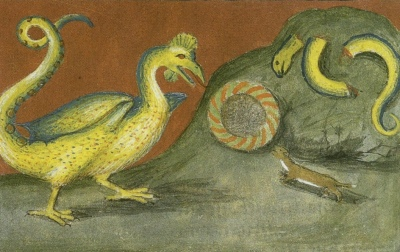

Sacred Texts
Esoteric
Buy this Book at Amazon.com

Basilisk: Aurora Consurgens [early 16th c.] (Public Domain Image) |
The Philosophy of Natural Magic
by Henry Cornelius Agrippa
ed. L. W. de Laurence
[1913]
|
Contents
Start Reading
Page Index
Text [Zipped]
They say, also, that the blood of a basilisk, which they call the blood of Saturn, hath such great force in sorcery that it procures for him that carries it about him good success of his petitions from great men in power, and of his prayers from God, and also remedies of diseases, and grant of any privilege.
This is an early 20th century edition of Agrippa's Philosophy of Natural
Magic, along with a wealth of background material.
Originally published in 1531-3, De occulta philosophia libri tres,
(Three books of Occult Philosophy) proposed that magic existed, and it
could be studied and used by devout Christians, as it was derived
from God, not the Devil.
Agrippa had a huge influence on Renaissance esoteric
philosophers, particularly Giordano Bruno.
While this is not a specialist edition, it will suffice
for the casual reader who doesn't want to wade through
Elizabethan typography and spelling, just enough of which
is preserved here for flavor.
A more comprehensive transcription is located
here.
This edition is a pastiche of a portion of a translation of Agrippas'
libri tres by an unidentified translator,
excerpts from a book on Agrippa by Henry Morley with extensive background,
and some self-promotional material by the publisher, de Lawrence, who
was a notorious pirate publisher.
This end material is of interest because it is a
good example of early 20th century American occult publishing.
Title Page
Dedication
Agrippa
Table of Contents
Sublime Occult Philosophy
Preface
Early Life of Cornelius Agrippa
Cornelius Agrippa to the Reader
Agrippa to Trithemius
Trithemius to Agrippa
Agrippa
Chapter I. How Magicians Collect Virtues from the Three-Fold World is Declared in these Three Books
Chapter II. What Magic Is, What Are the Parts Thereof, and How the Professors Thereof Must Be Qualified
Chapter III. Of the Four Elements, Their Qualities, and Mutual Mixtions
Chapter IV. Of a Three-Fold Consideration of the Elements
Chapter V. Of the Wonderful Natures of Fire and Earth
Chapter VI. Of the Wonderful Natures of Water, Air and Winds
Chapter VII. Of the Kinds of Compounds, what Relation They Stand in to the Elements, and What Relation There Is Betwixt the Elements Themselves and the Soul, Senses and Dispositions of Men
Chapter VIII. How the Elements Are in the Heavens, in Stars, in Devils, in Angels, and lastly in God Himself
Chapter IX. Of the Virtues of Things Natural, Depending Immediately upon Elements
Chapter X. Of the Occult Virtues of Things
Chapter XI. How Occult Virtues are Infused into the Several Kinds of Things by Ideas Through the Help of the Soul of the World, And Rays of the Stars; and what Things Abound Most with this Virtue
Chapter XII. How It Is That Particular Virtues Are Infused into Particular Individuals, even of the Same Species
Chapter XIII. Whence the Occult Virtues of Things Proceed
Chapter XIV. Of the Spirit of the World, What It Is, and How by Way of Medium It Unites Occult Virtues to Their Subjects
Chapter XV. How We Must Find Out and Examine the Virtues of Things by Way of Similitude
Chapter XVI. How the Operations of Several Virtues Pass from One Thing Into Another, and Are Communicated One to the Other
Chapter XVII. How by Enmity and Friendship the Virtues of Things Are to be Tried and Found Out
Chapter XVIII. Of the Inclinations of Enmities
Chapter XIX. How the Virtues of Things Are to Be Tried and Found Out, Which Are in Them Specially, or in Any One Individual by Way of Special Gift
Chapter XX. The Natural Virtues Are in Some Things Throughout Their Whole Substance, and in Other Things in Certain Parts and Members
Chapter XXI. Of the Virtues of Things Which Are in Them Only in Their Life Time, and Such as Remain in Them Even After Their Death
Chapter XXII. How Inferior Things Are Subjected to Superior Bodies, and How the Bodies, the Actions, and Dispositions of Men Are Ascribed to Stars and Signs
Chapter XXIII. How We Shall Know What Stars Natural Things Are Under, and What Things Are Under the Sun, Which Are Called Solary
What Things Are Lunary, or Under the Power of the Moon
Chapter XXV. What Things Are Saturnine, or Under the Power of Saturn
Chapter XXVI. What Things Are Under the Power of Jupiter, and Are Called Jovial
Chapter XXVII. What Things Are Under the Power of Mars, and Are Called Martial
Chapter XXVIII. What Things Are Under the Power of Venus, and Are Called Venereal
Chapter XXIX. What Things Are Under the Power of Mercury, and Are Called Mercurial
Chapter XXX. That the Whole Sublunary World, and Those Things Which Are in It, Are Distributed to Planets
Chapter XXXI. How Provinces and Kingdoms Are Distributed to Planets
Chapter XXXII. What Things Are Under the Signs, the Fixed Stars, and Their Images
Chapter XXXIII. Of the Seals and Characters of Natural Things
Chapter XXXIX. How, by Natural Things and Their Virtues, We May Draw Forth and Attract the Influences and Virtues of Celestial Bodies
Chapter XXXV. Of the Mixtions of Natural Things, One With Another, and Their Benefit
Chapter XXXVI. Of the Union of Mixed Things, and the Introduction of a More Noble Form and the Senses of Life
Chapter XXXVII. How, By Some Certain Natural and Artificial Preparations, We May Attract Certain Celestial and Vital Gifts
Chapter XXXVIII. How We May Draw Not Only Celestial and Vital, but Also Certain Intellectual and Divine Gifts From Above
Chapter XXXIX. That We May, By Some Certain Matters of the World, Stir Up the Gods of the World and Their Ministering Spirits
Chapter XL. Of Bindings; What Sort They Are Of, and in What Ways They Are Wont to Be Done
XLI. Of Sorceries, and Their Power
Chapter XLII. Of the Wonderful Virtues of Some Kinds of Sorceries
Chapter XLIII. Of Perfumes or Suffumigations; Their Manner and Power
Chapter XLIV. The Composition of Some Fumes Appropriated to the Planets
Chapter XLV. Of Collyries, Unctions, Love-Medicines, and Their Virtues
Chapter XLVI. Of Natural Alligations and Suspensions
Chapter XLVII. Of Magical Rings and Their Compositions
Chapter XLVIII. Of the Virtue of Places, and What Places Are Suitable to Every Star
Chapter XLIX. Of Light, Colors, Candles and Lamps, and to What Stars, Houses and Elements Several Colors Are Ascribed
Chapter L. Of Fascination, and the Art Thereof
Chapter LI. Of Certain Observations, Producing Wonderful Virtues
Chapter LII. Of the Countenance and Gesture, the Habit and the Figure Of The Body, and to What Stars Any of These Do Answer—Whence Physiognomy, and Metoposcopy, and Chiromancy, Arts of Divination, Have Their Grounds
Chapter LIII. Of Divinations, and the Kinds Thereof
Chapter LIV. Of Divers Certain Animals, and Other Things, Which Have a Signification in Auguries
Chapter LV. How Auspicias Are Verified by the Light of Natural Instinct, and of Some Rules of Finding It Out
Chapter LVI. Of the Soothsayings of Flashes and Lightnings, and how Monstrous and Prodigious Things are to be Interpreted
Chapter LVII. Of Geomancy, Hydromancy, Aeromancy, and Pyromancy, Four Divinations of Elements
Chapter LVIII. Of the Reviving of the Dead, and of Sleeping or Hibernating (Wanting Victuals) Many Years Together
Chapter LIX. Of Divination by Dreams
Chapter LX. Of Madness, and Divinations which are made when men are awake, and of the Power of a Melancholy Humor, by which Spirits are sometimes induced into Men's Bodies
Chapter LXI. Of the Forming of Man, of the External Senses, also those Inward, and the Mind; and of the Three-Fold Appetite of the Soul, and Passions of the Will
Chapter LXII. Of the Passions of the Mind, their Original Source, Differences, and Kinds
Chapter LXIII. How the Passions of the Mind Change the Proper Body by Changing Its Accidents and Moving the Spirit
Chapter LXIV. How the Passions of the Mind Change the Body by Way of Imitation From Some Resemblance; of the Transforming and Translating of Men, and What Force the Imaginative Power Hath, Not Only Over the Body But the Soul
Chapter LXV. How the Passions of the Mind can Work of Themselves Upon Another's Body
Chapter LXVI. That The Passions Of The Mind Are Helped By A Celestial Season, And How Necessary The Constancy Of The Mind Is In Every Work
Chapter LXVII. How the Mind of Man May Be Joined With the Mind of the Stars, and Intelligences of the Celestials, and, Together With Them, Impress Certain Wonderful Virtues Upon Inferior Things
Chapter LXVIII. How Our Mind Can Change and Bind Inferior Things to the Ends Which We Desire
Chapter LXIX. Of Speech, and the Occult Virtue of Words
Chapter LXX. Of the Virtue of Proper Names
Chapter LXXI. Of Many Words Joined Together, as in Sentences and Verses; and of the Virtues and Astrictions of Charms
Chapter LXXII. Of the Wonderful Power of Enchantments
Chapter LXXIII. Of the Virtue of Writing, and of Making Imprecations, and Inscriptions
Chapter LXXIV. Of the Proportion, Correspondency, and Reduction of Letters to the Celestial Signs and Planets, According to Various Tongues, and a Table Thereof
End Matter by Morley
Henry Morley's Criticism
Agrippa and the Rosicrucians
Exposition of the Cabala
The Mirific Word
Reuchlin The Mystic
Agrippa Expounds Reuchlin
The Nobility of Woman
Order of the Empyrean Heaven
Symbols of the Alchemists
End Matter by Lawrence
A Message From the Stars
The Eternal Principle
A Message to All Mystics
The Hindu Magic Mirror